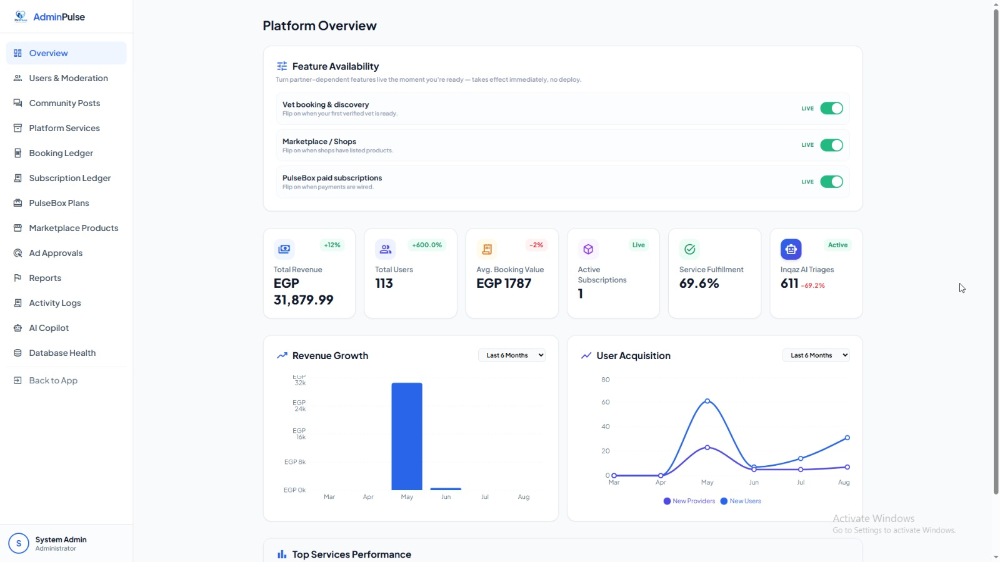
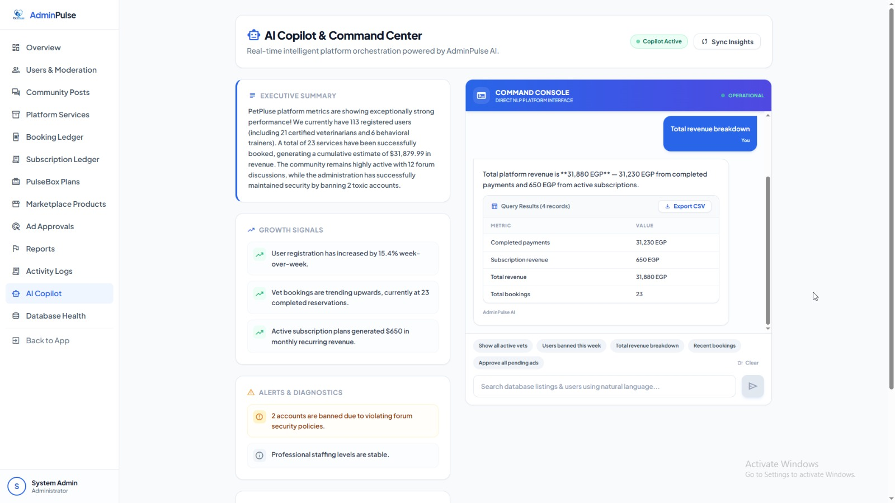

El Sewedy University of Technology · Graduation Project II · Phase 2
PetPluse
From prototype to a system that survives an attack.
2025 / 2026
Phase 2 defence
Agenda
Phase 1 argued the idea was viable. Phase 2 has to show a system.
01 — Phase 1 to Phase 2
Phase 1 proved the idea.
Phase 2 made it a system.
02 — Team
Ten members, three disciplines,
one codebase.
Dr. Mohamed Sobh · Eng. Hend Adel
03 — Problem
Four failures. Four shipped answers.
Each answer is live today — not a plan.
03 — Market Research
The market is fragmented.
We built to unify it.
Sara Ahmed, 23
Graphic Designer from Cairo. Struggles with a busy work schedule and finding trustworthy pet care.
- ✕Difficulty finding verified adoptions or mating partners
- ✕Scattered clinics with highly manual booking
- ✕Lack of reliable, safe pet hosting during travel
Collaborate with clinics and stores to provide a unified platform, dominating the fragmented Egyptian market.
03 — Solution
One platform, six roles.
04 — Architecture
Six layers, one deployment.
04 — Stack
Nothing here carries a licence fee.
Every paid dependency was replaced with a free or self-hosted equivalent before it entered the build.
05 — Delivered
Six subsystems, all live.
All six reachable on the live URL — not staged behind a demo mode.
05 — Community Features
Adoptions & Mating Hub.
Owner-controlled, species-matched.
05 — Agentic AI · Evolution
From a paid wrapper to
an in-house autonomous agent.
Paid OpenAI API
- ✕ Simple black-box wrapper
- ✕ High recurring monthly costs ($26/mo)
- ✕ Complete vendor lock-in
In-House Agentic Loop
- ✓ Full architectural control & custom tool schemas
- ✓ Zero recurring costs via open-weight models
- ✓ Provider-agnostic (Groq, Ollama, Mock fallback)
05 — Agentic AI
It stopped answering. It started doing.
Ten typed tools, every argument schema-validated
A chatbot describes the booking. An agent writes it to the database — and refuses when the case is an emergency.
05 — Agentic AI · how it works
Eight stages. The model runs in one.
What the model is never trusted with
05 — Administration
Built to be operated.

06 — Demonstration
AdminPulse, running live.
Every figure on that screen is read from the production database.

06 — Demonstration
Mobile-first, because that is how it is used.
Owners search for a vet on a phone — usually while something is already wrong.
07 — Security · the workstream
Security ran for twelve weeks.
Not twelve minutes at the end.
07 — Security · pass 01 · hardening
Twenty controls audited.
Fourteen fell short.
07 — Security · what we found
Eight findings.
Every one reproducible.
Click a finding · or press 1–8
07 — Security · how we closed it
Fixed in code.
Proved against the running system.
Click a fix · or press 1–8
07 — Security · standing defences
Finding them was half of it.
These are what guards it now.
Also owned by the security layer, across the platform
08 — Results
Phase 2 in numbers.
08 — Engineering decisions
Six decisions that hold under load.
08 — Timeline
Twelve weeks, six milestones.
08 — Outcomes
Everything we said we would fix. Closed.
A codebase that passes every automated scan can still expose a super-user credential. Found by hand, by this team, and closed before anyone outside it saw the system.
Thank you.
We welcome your questions.
Graduation Project II · Phase 2